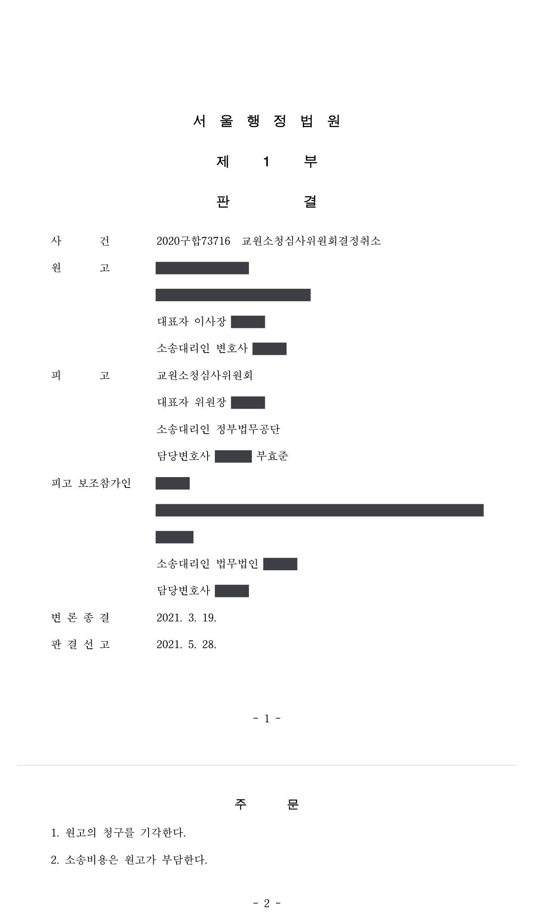

임기만료 교장의 교사 임용 거부처분을 취소한 소청 결정에 대한 취소소송
서울행정법원 2020구합73716 · 담당변호사 부효준
판결문

사건의 요지
임기가 만료된 교장을 교사로 임용하여 달라는 제청을 학교법인이 거부하자 교원소청심사위원회가 그 거부처분을 취소하였고, 학교법인이 그 결정의 취소를 구한 사건입니다. 소청 결정의 처분권주의 위반 여부, 임기 만료 교장의 교사 임용 거부가 소청심사의 대상이 되는지, 임용 거부의 재량권 일탈·남용 여부가 쟁점이 되었습니다.
사건의 주요 내용
사립학교에서 교사와 교감을 거쳐 교장으로 임명되었다가 2020년 2월 교장 임기가 만료된 교원(피고보조참가인)은, 임기만료 후 교사로 계속 근무하기를 희망하여 학교 인사위원회의 '계속 임용제청' 의결을 거쳐 학교법인에 교사 임용을 제청하였습니다. 학교법인의 정관은 교육공무원법의 원로교사 임용제도와 같은 내용으로 '정년 전에 임기가 끝나는 교장으로서 교사로 근무할 것을 희망하는 사람은 수업 담당 능력과 건강 등을 고려하여 교사로 임용할 수 있다'고 정하고 있었습니다.
그러나 학교법인 이사회는 2020년 2월 이 안건을 찬성 2표, 반대 6표로 부결하고 참가인에게 임기만료 퇴직을 통보하였습니다. 참가인의 소청심사 청구에 대하여 교원소청심사위원회는 2020년 7월 '정관이 정한 수업 담당 능력과 건강 등을 고려하여 결정하였다고 보기 어렵고, 부적격 사유를 입증할 근거를 제시하지 않은 채 임용을 거부한 것은 재량권을 일탈·남용한 것'이라는 이유로 거부처분을 취소하였습니다. 학교법인은 이 결정의 취소를 구하는 소송을 제기하였고, 부효준 변호사는 피고 소청심사위원회를 대리하였습니다.
쟁점
- 소청심사청구서의 청구취지에 적힌 처분일자와 다른 날의 통보를 취소한 소청심사 결정이 처분권주의에 위반되는지
- 임기가 만료된 사립학교 교장에게 정관에 따라 교사 임용을 요구할 조리상 신청권이 인정되어 임용 거부가 소청심사의 대상이 되는 처분인지
- 거부 사유를 밝히지 않은 채 이사회 부결만으로 교사 임용을 거부한 것이 재량권의 불행사·해태로서 재량권을 일탈·남용한 것인지
원고의 주장
- 참가인은 소청심사청구서에 '2020. 2. 26.자 평교사 재임용거부처분'의 취소를 구한다고 적었는데, 위원회가 이와 다른 '2020. 2. 27.자 통보'를 취소한 것은 행정심판법 제47조 제1항이 정한 처분권주의에 반하여 위법하다.
- 교장은 임기가 만료되면 특별한 절차 없이 당연퇴직하므로 임기가 만료되는 교장에게 교사 임용을 요구할 법규상·조리상 신청권이 없고, 그 신청을 거부하였더라도 법률상 지위에 직접적인 변동이 없어 소청심사의 대상이 되는 처분이 아니다.
- 교사 임용 여부는 학교법인의 재량사항이고 정관의 '수업 담당 능력, 건강'은 재량권 행사의 참작사항에 불과하므로 이사회 부결에 따른 거부에 재량권 일탈·남용이 없으며, 소송에서는 참가인이 교장의 지위와 권한을 남용하였다는 사유도 거부 사유로 추가하였다.
부효준 변호사의 주장
- 참가인이 소청심사 과정에서 제출한 청구이유서와 보충서면에는 다투는 대상이 이사회 부결 또는 2020. 2. 27.자 통보임이 분명히 적혀 있었으므로, 청구취지에 처분일자를 달리 적은 것은 처분성에 대한 해석의 착오일 뿐 처분권주의 위반이나 학교법인의 방어권 침해가 아니라고 반박하였습니다.
- 학교법인이 교육공무원법의 원로교사 임용제도와 같은 내용을 정관에 두고 2년 넘게 시행해 온 이상 임기만료 교장은 정관에 따른 공정한 심사를 요구할 조리상 신청권을 가지며, 학교법인 스스로 이사회에 안건을 상정하여 심의한 것도 신청권을 인정한 것이라고 주장하였습니다.
- 학교법인은 임용 거부 사유를 전혀 밝히지 않았고 이사회 회의록에도 사유가 기재되어 있지 않으며 참가인의 수업 담당 능력과 건강에 문제가 없었음을 스스로 인정하였으므로, 정관이 정한 심사기준을 고려하지 않은 거부는 재량권의 불행사·해태로서 위법하고, 소송에서 새로 든 사유는 정관의 심사기준과 무관하다고 주장하였습니다.
법원의 판단
법원은 처분권주의 위반 주장에 대하여, 참가인이 제출한 청구이유서와 보충서면에 취소를 구하는 대상이 충분히 특정되어 있었고 학교법인도 소청심사 과정의 공방을 통해 그 대상을 알 수 있었으므로, 청구취지에 처분일자를 달리 적은 사정만으로 위원회의 결정이 처분권주의에 반한다거나 원고의 방어권 행사가 제약되었다고 할 수 없다고 판단하였습니다.
소청심사 대상성에 관하여는, 교육공무원법 제29조의2 제6항·제7항과 교육공무원임용령 제9조의5가 정한 원로교사 임용제도는 연혁이 깊은 제도이고, 학교법인이 2017년 정관 개정으로 같은 내용의 조항을 신설하여 2년 넘게 시행해 왔으며, 정년까지 10년 넘게 남은 참가인은 거부로 인해 교장 임명 전에 가졌던 교원 지위를 되찾지 못하는 불이익을 입는다는 점 등을 들어, 임기만료 교장은 정관에 따른 공정한 심사를 요구할 조리상 신청권을 가지므로 임용 거부는 소청심사의 대상이 되는 처분이라고 보았습니다.
재량권에 관하여는, 교사 임용 여부가 학교법인의 재량행위이기는 하나 고려대상에 마땅히 포함시켜야 할 사항을 누락하는 등 재량권의 불행사·해태가 있으면 위법하다는 대법원 판례(2015. 8. 27. 선고 2013두1560 판결)를 전제로, 학교법인이 거부 사유를 전혀 밝히지 않았고 수업 담당 능력과 건강에 문제가 없었음을 인정한 이상 합리적인 기준에 기초한 공정한 심사가 결여되었다고 판단하였습니다. 소송에서 추가로 든 사유는 정관의 심사기준과 무관하고 증명도 부족하다고 보아, 거부처분을 취소한 위원회의 결정은 적법하다며 원고의 청구를 받아들이지 않았습니다.
앞서 본 인정사실 및 앞서 든 증거들에 변론 전체의 취지를 종합하여 인정되는 다음과 같은 사정들에 비추어 보면, 교장으로 임용되어 임기가 만료된 이 사건 학교의 교장은 원고 정관 제34조 제5항이 정하는 바에 따라 교사로서의 능력과 자질에 관하여 합리적인 기준에 의한 공정한 심사를 받아 위 기준에 부합되면 특별한 사정이 없는 한 교사로 임용되리라는 기대를 가지고 임용 여부에 관하여 합리적인 기준에 의한 공정한 심사를 요구할 조리상 신청권을 가진다고 할 것이므로, 이 사건 거부처분은 소청심사의 대상이 되는 처분에 해당한다고 할 것이다.
서울행정법원 2020구합73716 판결 이유 '4. 나. 2) 구체적인 판단'
원고 정관 제34조 제5항은 정년 전에 임기가 끝나는 교장으로서 교사로 근무할 것을 희망하는 사람은 ’수업 담당 능력과 건강 등‘을 고려하여 교사로 임용할 수 있다고 규정하고 있고, 교장의 임기가 만료되면 임용권자인 원고는 위와 같은 사정을 참작하여 임용 여부를 심사할 필요성이 있으므로, 원고가 참가인을 교사로 임용할 것인지 여부는 원고의 판단에 따른 재량행위에 속한다. 다만, 임기가 만료된 교장인 참가인으로서는 원고 정관 제34조 제5항에 따라 교원으로서의 능력과 자질에 관하여 합리적인 기준에 의한 공정한 심사를 받아 위 기준에 부합되면 특별한 사정이 없는 한 임용되리라는 기대를 가지고 임용 여부에 관하여 합리적인 기준에 의한 공정한 심사를 요구할 권리를 가진다고 할 것인데, 원고가 재량권의 행사과정에서 고려대상에 마땅히 포함시켜야 할 사항을 누락하는 등 재량권의 불행사 또는 해태로 볼 수 있는 구체적 사정이 있다면, 그 거부처분은 재량권을 일탈ㆍ남용한 것으로서 위법하다고 보아야 할 것이다(대법원 2015. 8. 27. 선고 2013두1560 판결 등 참조).
서울행정법원 2020구합73716 판결 이유 '4. 다. 1)' 부분(관련 법리)
살피건대, 원고는 이 사건 처분을 하면서 참가인을 임용하지 않는 사유를 전혀 밝히지 않았고, 참가인에 대한 임용 여부를 심의한 원고의 이사회 회의록에도 이 사건 처분에 대한 구체적인 사유가 전혀 기재되어 있지 않으며(갑 제4호증), 원고는 이 사건 제1회 변론기일에서 이 사건 거부처분 당시 참가인이 교사로서 수업담당 능력과 건강에는 전혀 문제가 없었다는 사실을 스스로 인정하였는바, 이러한 사정에 비추어 보면, 참가인에 대한 임용 거부의 객관적 사유, 즉 임용 심사기준에 미달된다는 사유가 전혀 존재하지 않거나 그 사유가 존재한다 하더라도 합리적인 기준에 기초한 공정한 심사가 결여된 것으로 인정되므로, 이 사건 처분은 재량권을 일탈ㆍ남용한 것으로서 위법하다고 판단된다.
서울행정법원 2020구합73716 판결 이유 '4. 다. 1)' 부분(이 사건에의 적용)
※ 판결 이유 가운데 이 사건의 판단 기준이 된 부분을 그대로 옮긴 것으로, 당사자 이름 등은 가렸습니다.
이 사건이 보여 주는 것
사립학교가 교육공무원법의 원로교사 제도를 정관에 받아들여 시행하고 있다면, 임기가 만료된 교장은 교사 임용 여부에 관하여 '합리적인 기준에 의한 공정한 심사'를 요구할 조리상 신청권을 가지며, 그 거부는 소청심사와 행정소송으로 다툴 수 있는 처분이 됩니다. 사립학교법에 명문 규정이 없더라도 정관으로 제도를 두고 시행해 왔다는 사실이 신청권 인정의 근거가 되었습니다.
임용권자인 학교법인으로서는 이사회 의결로 임용을 거부하더라도 정관이 정한 기준(수업 담당 능력·건강 등)을 실제로 심사하였음이 회의록 등으로 드러나야 하고, 거부 사유를 밝히지 않은 채 소송에서 다른 사유를 내세우는 것은 받아들여지지 않습니다. 소청심사 청구서의 처분일자 기재에 다소 착오가 있어도 청구이유서 등으로 대상이 특정되면 결정의 효력에 영향이 없다는 점도 참고할 만합니다.
비슷한 처분을 받으셨다면
행정처분은 처분이 있음을 안 날부터 90일 이내에 행정심판이나 취소소송으로 다투어야 하고, 기간이 지나면 돌이킬 수 없는 처분은 집행정지를 서둘러야 합니다. 처분서를 받은 날짜부터 확인해 드립니다.